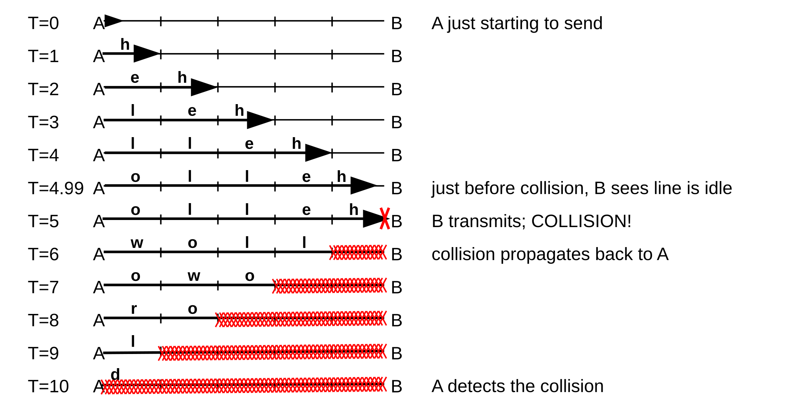
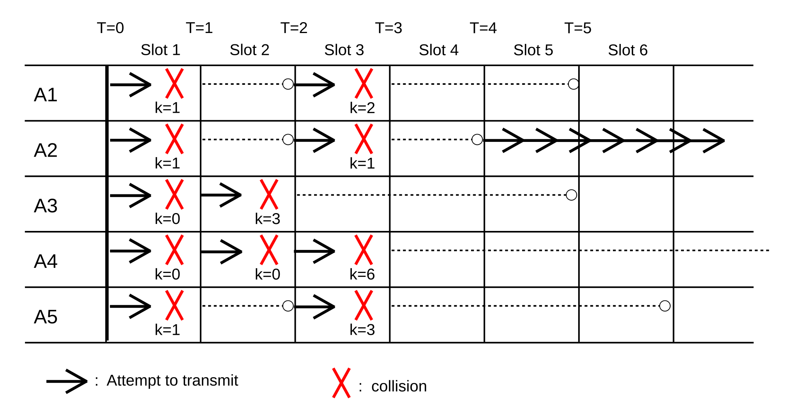
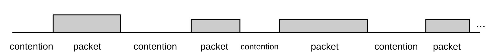

2 Ethernet Basics¶
We now turn to a deeper analysis of the ubiquitous Ethernet LAN protocol. In this chapter we cover the more universal Ethernet concepts, such as would be encountered in any residential or small-office Ethernet setting and including switching and learning. The following chapter covers more advanced features, such as the spanning-tree algorithm, virtual LANs, Ethernet hardware, TRILL/SPB and software-defined networking.
Current user-level Ethernet today (2020) is usually 100 Mbps or Gigabit, with Gigabit and 10 Gigabit Ethernet standard in server rooms and backbones. However, because the potential for packet collisions makes Ethernet speeds scale in odd ways, we will start with the 10 Mbps formulation. While the 10 Mbps speed is obsolete, and while even the Ethernet collision mechanism is largely obsolete, collision management itself continues to play a significant role in wireless networks.
The original Ethernet specification was the 1976 paper of Metcalfe and Boggs, [MB76]. The data rate was 10 megabits per second, and all connections were made with coaxial cable instead of today’s twisted pair. The authors described their passive architecture as follows:
We cannot afford the redundant connections and dynamic routing of store-and-forward packet switching to assure reliable communication, so we choose to achieve reliability through simplicity. We choose to make the shared communication facility passive so that the failure of an active element will tend to affect the communications of only a single station.
Classic Ethernet was indeed simple, and – mostly – passive. In its most basic form, the Ethernet medium was one long piece of coaxial cable, onto which stations could be connected via taps. If two stations happened to transmit at the same time – most likely because they were both waiting for a third station to finish – their signals were lost to the resultant collision. The only active components besides the stations were repeaters, originally intended simply to make end-to-end joins between cable segments.
Repeaters soon evolved into multiport devices, allowing the creation of arbitrary tree (that is, loop-free) topologies. At this point the standard wiring model shifted from one long cable, snaking from host to host, to a “star” network, where each host connected directly to a central multipoint repeater. This shift allowed for the replacement of expensive coaxial cable by the much-cheaper twisted pair; links could not be as long, but they did not need to be.
Repeaters, which forwarded collisions, soon gave way to switches, which did not (2.4 Ethernet Switches). Switches thus partitioned an Ethernet into disjoint collision domains, or physical Ethernets, through which collisions could propagate; an aggregation of physical Ethernets connected by switches was then sometimes known as a virtual Ethernet. Collision domains became smaller and smaller, eventually down to individual links and then vanishing entirely.
Throughout all these early changes, Ethernet never implemented true redundant connections, in that at any one instant the topology was always required to be loop-free. However, by 1985 Ethernet did adopt a mechanism by which idle backup links can quickly be placed into service after a primary link fails; 3.1 Spanning Tree Algorithm and Redundancy. Finally, in the early part of this century, support for redundant connections (and looping topologies) arrived in the form of TRILL and SPB (3.3 TRILL and SPB).
2.1 10-Mbps Classic Ethernet¶
Originally, Ethernet consisted of a long piece of cable (possibly spliced by repeaters). When a station transmitted, the data went everywhere along that cable. Such an arrangement is known as a broadcast bus; all packets were, at least at the physical layer, broadcast onto the shared medium and could be seen, theoretically, by all other nodes. Logically, however, most packets would appear to be transmitted point-to-point, not broadcast. This was because between each station CPU and the cable there was a peripheral device (that is, a card) known as a network interface, which would take care of the details of transmitting and receiving. The network interface would (and still does) decide when a received packet should be forwarded to the host, via a CPU interrupt.
Fig. 8: Hosts and cable, with network interfaces in between
Whenever two stations transmitted at the same time, the signals would collide, and interfere with one another; both transmissions would fail as a result. Proper handling of collisions was an essential part of the access-mediation strategy for the shared medium. In order to minimize collision loss, each station implemented the following:
- Before transmission, wait for the line to become quiet
- While transmitting, continually monitor the line for signs that a collision has occurred; if a collision is detected, cease transmitting
- If a collision occurs, use a backoff-and-retransmit strategy
These properties can be summarized with the CSMA/CD acronym: Carrier Sense, Multiple Access, Collision Detect. (The term “carrier sense” was used by Metcalfe and Boggs as a synonym for “signal sense”; there is no literal carrier frequency to be sensed.) It should be emphasized that collisions are a normal event in Ethernet, well-handled by the mechanisms above.
Classic Ethernet came in version 1 [1980, DEC-Intel-Xerox], version 2 [1982, DIX], and IEEE 802.3. There are some minor electrical differences between these, and one rather substantial packet-format difference, below. In addition to these, the Berkeley Unix trailing-headers packet format was used for a while.
There were three physical formats for 10 Mbps Ethernet cable: thick coax (10BASE-5), thin coax (10BASE-2), and, last to arrive, twisted pair (10BASE-T). Thick coax was the original; economics drove the successive development of the later two. The cheaper twisted-pair cabling eventually almost entirely displaced coax, at least for host connections.
The original specification included support for repeaters, which were in effect signal amplifiers although they might attempt to clean up a noisy signal. Repeaters processed each bit individually and did no buffering. In the telecom world, a repeater might be called a digital regenerator. A repeater with more than two ports was commonly called a hub; hubs allowed branching and thus much more complex topologies.
It was the rise of hubs that enabled star topologies in which each host connects directly to the hub rather than to one long run of coax. This in turn enabled twisted-pair cable: while this supported maximum runs of about 100 meters, versus the 500 meters of thick coax, each run simply had to go from the host to the central hub in the wiring closet. This was much more convenient than having to snake coax all around the building. A hub failure would bring the network down, but hubs proved largely reliable.
Bridges – later known as switches – came along a short time later. While repeaters act at the bit layer, a switch reads in and forwards an entire packet as a unit, and the destination address is consulted to determine to where the packet is forwarded. Except for possible collision-related performance issues, hubs and switches are interchangeable. Eventually, most wiring-closet hubs were replaced with switches.
Hubs propagate collisions; switches do not. If the signal representing a collision were to arrive at one port of a hub, it would, like any other signal, be retransmitted out all other ports. If a switch were to detect a collision on one port, no other ports would be involved; only packets received successfully are ever retransmitted out other ports.
Originally, switches were seen as providing interconnection (“bridging”) between separate physical Ethernets; a switch for such a purpose needed just two ports. Later, a switched Ethernet was seen as one large “virtual” Ethernet, composed of smaller collision domains. Although the term “switch” is now much more common than “bridge”, the latter is still in use, particularly by the IEEE. For some, a switch is a bridge with more than two ports, though that distinction is relatively meaningless as it has been years since two-port bridges were last manufactured. We return to switching below in 2.4 Ethernet Switches.
In the original thick-coax cabling, connections were made via taps, often literally drilled into the coax central conductor. Thin coax allowed the use of T-connectors to attach hosts. Twisted-pair does not allow mid-cable attachment; it is only used for point-to-point links between hosts, switches and hubs. Mid-cable attachment, however, was always simply a way of avoiding the need for active devices like hubs and switches.
There is still a role for hubs today when one wants to monitor the Ethernet signal from A to B (eg for intrusion detection analysis), although some switches now also support a form of monitoring.
All three cable formats could interconnect, although only through repeaters and hubs, and all used the same 10 Mbps transmission speed. While twisted-pair cable is still used by 100 Mbps Ethernet, it generally needs to be a higher-performance version known as Category 5, versus the 10 Mbps Category 3.
Data in 10 Mbps Ethernets was transmitted using Manchester encoding; see 6.1.3 Manchester. This meant that the electronics had to operate, in effect, at 20 Mbps. Faster Ethernets use different encodings.
2.1.1 Ethernet Packet Format¶
Here is the format of a typical Ethernet packet (DIX specification); it is still used for newer, faster Ethernets:
Fig. 9: Ethernet packet with header fields
The destination and source addresses are 48-bit quantities; the type is 16 bits, the data length is variable up to a maximum of 1500 bytes, and the final CRC checksum is 32 bits. The checksum is added by the Ethernet hardware, never by the host software. There is also a preamble, not shown: a block of 1 bits followed by a 0, in the front of the packet, for synchronization. The type field identifies the next higher protocol layer; a few common type values are 0x0800 = IP, 0x8137 = IPX, 0x0806 = ARP.
The IEEE 802.3 specification replaced the type field by the length field, though this change never caught on. The two formats can be distinguished as long as the type values used are larger than the maximum Ethernet length of 1500 (or 0x05dc); the type values given in the previous paragraph all meet this condition.
The Ethernet maximum packet length of 1500 bytes worked well in the past, but can seem inconveniently small at 10 Gbit speeds. But 1500 bytes has become the de facto maximum packet size throughout the Internet, not just on Ethernet LANs; increasing it would be difficult. TCP TSO (17.5 TCP Offloading) is one alternative.
Each Ethernet card has a (hopefully unique) physical address in ROM; by default any packet sent to this address will be received by the board and passed up to the host system. Packets addressed to other physical addresses will be seen by the card, but ignored (by default). All Ethernet devices also agree on a broadcast address of all 1’s: a packet sent to the broadcast address will be delivered to all attached hosts.
It is sometimes possible to change the physical address of a given card in software. It is almost universally possible to put a given card into promiscuous mode, meaning that all packets on the network, no matter what the destination address, are delivered to the attached host. This mode was originally intended for diagnostic purposes but became best known for the security breach it opens: it was once not unusual to find a host with network board in promiscuous mode and with a process collecting the first 100 bytes (presumably including userid and password) of every telnet connection.
2.1.2 Ethernet Multicast¶
Another category of Ethernet addresses is multicast, used to transmit to a set of stations; streaming video to multiple simultaneous viewers might use Ethernet multicast. The lowest-order bit in the first byte of an address indicates whether the address is physical or multicast. To receive packets addressed to a given multicast address, the host must inform its network interface that it wishes to do so; once this is done, any arriving packets addressed to that multicast address are forwarded to the host. The set of subscribers to a given multicast address may be called a multicast group. While higher-level protocols might prefer that the subscribing host also notifies some other host, eg the sender, this is not required, although that might be the easiest way to learn the multicast address involved. If several hosts subscribe to the same multicast address, then each will receive a copy of each multicast packet transmitted.
We are now able to list all cases in which a network interface forwards a received packet up to its attached host:
- if the destination address of the received packet matches the physical address of the interface
- if the destination address of the received packet is the broadcast address
- if the interface is in promiscuous mode
- if the destination address of the received packet is a multicast address and the host has told the network interface to accept packets sent to that multicast address
If switches (below) are involved, they must normally forward multicast packets on all outbound links, exactly as they do for broadcast packets; switches have no obvious way of telling where multicast subscribers might be. To avoid this, some switches do try to engage in some form of multicast filtering, sometimes by snooping on higher-layer multicast protocols. Multicast Ethernet is seldom used by IPv4, but plays a larger role in IPv6 configuration.
2.1.3 Ethernet Address Internal Structure¶
The second-to-lowest-order bit of a physical Ethernet address indicates whether that address is believed to be globally unique or if it is only locally unique; this is known as the Universal/Local bit. For real Ethernet physical addresses, the multicast and universal/local bits of the first byte should both be 0. At the physical layer, Ethernet transmits the bits of each byte from low-order to high-order (as do many other serial protocols such as HDLC (6.1.5.1 HDLC) and the ubiquitous last-century serial protocol RS-232); this means that these two flag bits are in fact the first address bits to be transmitted. It is not clear whether this was ever important.
When (global) Ethernet IDs are assigned to physical Ethernet cards by the manufacturer, the first three bytes serve to indicate the manufacturer. They are allocated by the IEEE, and are officially known as organizationally unique identifiers. These can be looked up at any of several sites on the Internet to identify the manufacturer associated with any given Ethernet address; the official IEEE site is standards.ieee.org/develop/regauth/oui/public.html (OUIs must be entered here without colons).
As long as the manufacturer involved is diligent in assigning the second three bytes, every manufacturer-provided Ethernet address should be globally unique. Lapses, however, are not unheard of.
Ethernet addresses for virtual machines must be distinct from the Ethernet address of the host system, and may be (eg with so-called “bridged” configurations) as visible on the LAN as that host system’s address. The first three bytes of virtual Ethernet addresses are often taken from the OUI assigned to the manufacturer whose card is being emulated; the last three bytes are then either set randomly or via configuration. In principle, the universal/local bit should be 1, as the address is only locally unique, but this is often ignored. It is entirely possible for virtual Ethernet addresses to be assigned so as to have some local meaning, though this appears not to be common.
2.1.4 The LAN Layer¶
The LAN layer, at its upper end, supplies to the network layer a mechanism for addressing a packet and sending it from one station to another. At its lower end, it handles interactions with the physical layer. The LAN layer covers packet addressing, delivery and receipt, forwarding, error detection, collision detection and collision-related retransmission attempts.
In IEEE protocols, the LAN layer is divided into the media access control, or MAC, sublayer and a higher logical link control, or LLC, sublayer for higher-level flow-control functions. The LLC layer is defined in IEEE standard 802.2 (versus 802.3 for the MAC layer), and is applicable to non-Ethernet LANs as well. For Ethernet, many of the LLC functions have been almost entirely supplanted by flow-control at the Transport layer (eg TCP). The LLC layer defines (but does not mandate) a form of the HDLC protocol (6.1.5.1 HDLC), which in turn supports sliding windows (8.2 Sliding Windows) as an option. The much-earlier X.25 LAN protocol also offered partial support for HDLC. Similarly, ATM, 5.5 Asynchronous Transfer Mode: ATM, supports some higher-level transport-like functions, though not sliding windows.
Because use of the LLC layer is so often insignificant, and because the most well-known LAN-layer functions are in fact part of the MAC sublayer, it is common to identify the LAN layer with its MAC sublayer, especially for IEEE protocols where the MAC layer has official standing. In particular, LAN-layer addresses are perhaps most often called MAC addresses.
Generally speaking, much of the operation of the LAN/MAC layer takes place in the network card. Host systems (including drivers) are, for example, generally oblivious to collisions (although they may query the card for collision statistics). In some cases, eg with Wi-Fi rate scaling (4.2.2 Dynamic Rate Scaling), the host-system driver may get involved.
2.1.5 The Slot Time and Collisions¶
The diameter of an Ethernet is the maximum distance between any pair of stations. The actual total length of cable can be much greater than this, if, for example, the topology is a “star” configuration. The maximum allowed diameter, measured in bits, is limited to 232 (a sample “budget” for this is below). This makes the round-trip-time 464 bits. As each station involved in a collision discovers it, it transmits a special jam signal of up to 48 bits. These 48 jam bits bring the total above to 512 bits, or 64 bytes. The time to send these 512 bits is the slot time of an Ethernet; time intervals on Ethernet are often described in bit times but in conventional time units the slot time is 51.2 µsec.
The value of the slot time determines several subsequent aspects of Ethernet. If a station has transmitted for one slot time, then no collision can occur (unless there is a hardware error) for the remainder of that packet. This is because one slot time is enough time for any other station to have realized that the first station has started transmitting, so after that time they will wait for the first station to finish. Thus, after one slot time a station is said to have acquired the network. The slot time is also used as the basic interval for retransmission scheduling, below.
Conversely, a collision can be received, in principle, at any point up until the end of the slot time. As a result, Ethernet has a minimum packet size, equal to the slot time, ie 64 bytes (or 46 bytes in the data portion). A station transmitting a packet this size is assured that if a collision were to occur, the sender would detect it (and be able to apply the retransmission algorithm, below). Smaller packets might collide and yet the sender not know it, ultimately leading to greatly reduced throughput.
If we need to send less than 46 bytes of data (for example, a 40-byte TCP ACK packet), the Ethernet packet must be padded out to the minimum length. As a result, all protocols running on top of Ethernet need to provide some way to specify the actual data length, as it cannot be inferred from the received packet size.
As a specific example of a collision occurring as late as possible, consider the diagram below. A and B are 5 units apart, and the bandwidth is 1 byte/unit. A begins sending “helloworld” at T=0; B starts sending just as A’s message arrives, at T=5. B has listened before transmitting, but A’s signal was not yet evident. A doesn’t discover the collision until 10 units have elapsed, which is twice the distance.

Fig. 10: Ethernet collision, showing one full RTT before collision detectability
Here are typical maximum values for the delay in 10 Mbps Ethernet due to various components. These are taken from the Digital-Intel-Xerox (DIX) standard of 1982, except that “point-to-point link cable” is replaced by standard cable. The DIX specification allows 1500m of coax with two repeaters and 1000m of point-to-point cable; the table below shows 2500m of coax and four repeaters, following the later IEEE 802.3 Ethernet specification. Some of the more obscure delays have been eliminated. Entries are one-way delay times, in bits. The maximum path may have four repeaters, and ten transceivers (simple electronic devices between the coax cable and the NI cards), each with its drop cable (two transceivers per repeater, plus one at each endpoint).
Ethernet delay budget
| item | length | delay, in bits | explanation (c = speed of light) |
|---|---|---|---|
| coax | 2500 m | 110 bits | 23 meters/bit (.77c) |
| transceiver cables | 500 m | 25 bits | 19.5 meters/bit (.65c) |
| transceivers | 40 bits, max 10 units | 4 bits each | |
| repeaters | 25 bits, max 4 units | 6+ bits each (DIX 7.6.4.1) | |
| encoders | 20 bits, max 10 units | 2 bits each (for signal generation) |
The total here is 220 bits; in a full accounting it would be 232. Some of the numbers shown are a little high, but there are also signal rise time delays, sense delays, and timer delays that have been omitted. It works out fairly closely.
Implicit in the delay budget table above is the “length” of a bit. The speed of propagation in copper is about 0.77×c, where c=3×108 m/sec = 300 m/µsec is the speed of light in vacuum. So, in 0.1 microseconds (the time to send one bit at 10 Mbps), the signal propagates approximately 0.77×c×10-7 = 23 meters.
Ethernet packets also have a maximum packet size, of 1500 bytes. This limit is primarily for the sake of fairness, so one station cannot unduly monopolize the cable (and also so stations can reserve buffers guaranteed to hold an entire packet). At one time hardware vendors often marketed their own incompatible “extensions” to Ethernet which enlarged the maximum packet size to as much as 4 kB. There is no technical reason, actually, not to do this, except compatibility.
The signal loss in any single segment of cable is limited to 8.5 db, or about 14% of original strength. Repeaters will restore the signal to its original strength. The reason for the per-segment length restriction is that Ethernet collision detection requires a strict limit on how much the remote signal can be allowed to lose strength. It is possible for a station to detect and reliably read very weak remote signals, but not at the same time that it is transmitting locally. This is exactly what must be done, though, for collision detection to work: remote signals must arrive with sufficient strength to be heard even while the receiving station is itself transmitting. The per-segment limit, then, has nothing to do with the overall length limit; the latter is set only to ensure that a sender is guaranteed of detecting a collision, even if it sends the minimum-sized packet.
2.1.6 Exponential Backoff Algorithm¶
Whenever there is a collision the exponential backoff algorithm – operating at the MAC layer – is used to determine when each station will retry its transmission. Backoff here is called exponential because the range from which the backoff value is chosen is doubled after every successive collision involving the same packet. Here is the full Ethernet transmission algorithm, including backoff and retransmissions:
- Listen before transmitting (“carrier detect”)
- If line is busy, wait for sender to stop and then wait an additional 9.6 microseconds (96 bits). One consequence of this is that there is always a 96-bit gap between packets, so packets do not run together.
- Transmit while simultaneously monitoring for collisions
- If a collision does occur, send the jam signal, and choose a backoff time as follows: For transmission N, 1≤N≤10 (N=0 represents the original attempt), choose k randomly with 0 ≤ k < 2N. Wait k slot times (k×51.2 µsec). Then check if the line is idle, waiting if necessary for someone else to finish, and then retry step 3. For 11≤N≤15, choose k randomly with 0 ≤ k < 1024 (= 210)
- If we reach N=16 (16 transmission attempts), give up.
If an Ethernet sender does not reach step 5, there is a very high probability that the packet was delivered successfully.
Exponential backoff means that if two hosts have waited for a third to finish and transmit simultaneously, and collide, then when N=1 they have a 50% chance of recollision; when N=2 there is a 25% chance, etc. When N≥10 the maximum wait is 52 milliseconds; without this cutoff the maximum wait at N=15 would be 1.5 seconds. As indicated above in the minimum-packet-size discussion, this retransmission strategy assumes that the sender is able to detect the collision while it is still sending, so it knows that the packet must be resent.
In the following diagram is an example of several stations attempting to transmit all at once, and using the above transmission/backoff algorithm to sort out who actually gets to acquire the channel. We assume we have five prospective senders A1, A2, A3, A4 and A5, all waiting for a sixth station to finish. We will assume that collision detection always takes one slot time (it will take much less for nodes closer together) and that the slot start-times for each station are synchronized; this allows us to measure time in slots. A solid arrow at the start of a slot means that sender began transmission in that slot; a red X signifies a collision. If a collision occurs, the backoff value k is shown underneath. A dashed line shows the station waiting k slots for its next attempt.

Fig. 11: Ethernet collisions with exponential backoff
At T=0 we assume the transmitting station finishes, and all the Ai transmit and collide. At T=1, then, each of the Ai has discovered the collision; each chooses a random k<2. Let us assume that A1 chooses k=1, A2 chooses k=1, A3 chooses k=0, A4 chooses k=0, and A5 chooses k=1.
Those stations choosing k=0 will retransmit immediately, at T=1. This means A3 and A4 collide again, and at T=2 they now choose random k<4. We will Assume A3 chooses k=3 and A4 chooses k=0; A3 will try again at T=2+3=5 while A4 will try again at T=2, that is, now.
At T=2, we now have the original A1, A2, and A5 transmitting for the second time, while A4 trying again for the third time. They collide. Let us suppose A1 chooses k=2, A2 chooses k=1, A5 chooses k=3, and A4 chooses k=6 (A4 is choosing k<8 at random). Their scheduled transmission attempt times are now A1 at T=3+2=5, A2 at T=4, A5 at T=6, and A4 at T=9.
At T=3, nobody attempts to transmit. But at T=4, A2 is the only station to transmit, and so successfully seizes the channel. By the time T=5 rolls around, A1 and A3 will check the channel, that is, listen first, and wait for A2 to finish. At T=9, A4 will check the channel again, and also begin waiting for A2 to finish.
A maximum of 1024 hosts is allowed on an Ethernet. This number apparently comes from the maximum range for the backoff time as 0 ≤ k < 1024. If there are 1024 hosts simultaneously trying to send, then, once the backoff range has reached k<1024 (N=10), we have a good chance that one station will succeed in seizing the channel, that is; the minimum value of all the random k’s chosen will be unique.
This backoff algorithm is not “fair”, in the sense that the longer a station has been waiting to send, the lower its priority sinks. Newly transmitting stations with N=0 need not delay at all. The Ethernet capture effect, below, illustrates this unfairness.
2.1.7 Capture effect¶
The capture effect is a scenario illustrating the potential lack of fairness in the exponential backoff algorithm. The unswitched Ethernet must be fully busy, in that each of two senders always has a packet ready to transmit.
Let A and B be two such busy nodes, simultaneously starting to transmit their first packets. They collide. Suppose A wins, and sends. When A is finished, B tries to transmit again. But A has a second packet, and so A tries too. A chooses a backoff k<2 (that is, between 0 and 1 inclusive), but since B is on its second attempt it must choose k<4. This means A is favored to win. Suppose it does.
After that transmission is finished, A and B try yet again: A on its first attempt for its third packet, and B on its third attempt for its first packet. Now A again chooses k<2 but B must choose k<8; this time A is much more likely to win. Each time B fails to win a given backoff, its probability of winning the next one is reduced by about 1/2. It is quite possible, and does occur in practice, for B to lose all the backoffs until it reaches the maximum of N=16 attempts; once it has lost the first three or four this is in fact quite likely. At this point B simply discards the packet and goes on to the next one with N reset to 1 and k chosen from {0,1}.
The capture effect can be fixed with appropriate modification of the backoff algorithm; the Binary Logarithmic Arbitration Method (BLAM) was proposed in [MM94]. The BLAM algorithm was considered for the then-nascent 100 Mbps Fast Ethernet standard. But in the end a hardware strategy won out: Fast Ethernet supports “full-duplex” mode which is collision-free (see 2.2 100 Mbps (Fast) Ethernet, below). While Fast Ethernet continues to support the original “half-duplex” mode, it was assumed that any sites concerned enough about performance to be worried about the capture effect would opt for full-duplex.
2.1.8 Hubs and topology¶
Ethernet hubs (multiport repeaters) change the topology, but not the fundamental constraints. Hubs enabled the model in which each station now had its own link to the wiring closet. Loops are still forbidden. The maximum diameter of an Ethernet consisting of multiple segments joined by hubs is still constrained by the round-trip-time, and the need to detect collisions before the sender has completed sending, as before. However, the network “diameter”, or maximum distance between two hosts, is no longer synonymous with “total length”. Because twisted-pair links are much shorter, about 100 meters, the diameter constraint is often immaterial.
2.1.9 Errors¶
Packets can have bits flipped or garbled by electrical noise on the cable; estimates of the frequency with which this occurs range from 1 in 104 to 1 in 106. Bit errors are not uniformly likely; when they occur, they are likely to occur in bursts. Packets can also be lost in hubs, although this appears less likely. Packets can be lost due to collisions only if the sending host makes 16 unsuccessful transmission attempts and gives up. Ethernet packets contain a 32-bit CRC error-detecting code (see 7.4.1 Cyclical Redundancy Check: CRC) to detect bit errors. Packets can also be misaddressed by the sending host, or, most likely of all, they can arrive at the receiving host at a point when the receiver has no free buffers and thus be dropped by a higher-layer protocol.
2.1.10 CSMA persistence¶
A carrier-sense/multiple-access transmission strategy is said to be nonpersistent if, when the line is busy, the sender waits a randomly selected time. A strategy is p-persistent if, after waiting for the line to clear, the sender sends with probability p≤1. Ethernet uses 1-persistence. A consequence of 1-persistence is that, if more than one station is waiting for line to clear, then when the line does clear a collision is certain. However, Ethernet then gracefully handles the resulting collision via the usual exponential backoff. If N stations are waiting to transmit, the time required for one station to win the backoff is linear in N.
When we consider the Wi-Fi collision-handling mechanisms in 4.2 Wi-Fi, we will see that collisions cannot be handled quite as cheaply: for one thing, there is no way to detect a collision in progress, so the entire packet-transmission time is wasted. In the Wi-Fi case, p-persistence is used with p<1.
An Ethernet broadcast storm was said to occur when there were too many transmission attempts, and most of the available bandwidth was tied up in collisions. A properly functioning classic Ethernet had an effective bandwidth of as much as 50-80% of the nominal 10Mbps capacity, but attempts to transmit more than this typically resulted in successfully transmitting a good deal less.
2.1.11 Analysis of Classic Ethernet¶
How much time does Ethernet “waste” on collisions? A paradoxical attribute of Ethernet is that raising the transmission-attempt rate on a busy segment can reduce the actual throughput. More transmission attempts can lead to longer contention intervals between packets, as senders use the transmission backoff algorithm to attempt to acquire the channel. What effective throughput can be achieved?
It is convenient to refer to the time between packet transmissions as the contention interval even if there is no actual contention, that is, even if the network is idle; we cannot tell if stations are not transmitting because they have nothing to send, or if they are simply waiting for their backoff timer to expire. Thus, a timeline for Ethernet always consists of alternating packet transmissions and contention intervals:

Fig. 12: Ethernet packet transmissions alternating with contention intervals
As a first look at contention intervals, assume that there are N stations waiting to transmit at the start of the interval. It turns out that, if all follow the exponential backoff algorithm, we can expect O(N) slot times before one station successfully acquires the channel; thus, Ethernets are happiest when N is small and there are only a few stations simultaneously transmitting. However, multiple stations are not necessarily a severe problem. Often the number of slot times needed turns out to be about N/2, and slot times are short. If N=20, then N/2 is 10 slot times, or 640 bytes. However, one packet time might be 1500 bytes. If packet intervals are 1500 bytes and contention intervals are 640 byes, this gives an overall throughput of 1500/(640+1500) = 70% of capacity. In practice, this seems to be a reasonable upper limit for the throughput of classic shared-media Ethernet.
2.1.11.1 The ALOHA models¶
Another approach to analyzing the Ethernet contention interval is by using the ALOHA model that was a precursor to Ethernet. In the ALOHA model, stations transmit packets without listening first for a quiet line or monitoring the transmission for collisions (this models the situation of several ground stations transmitting to a satellite; the ground stations are presumed unable to see one another). Similarly, during the Ethernet contention interval, stations transmit one-slot packets under what are effectively the same conditions (we return to this below).
The ALOHA model yields roughly similar throughput values to the O(N) model of the previous section. We make, however, a rather artificial assumption: that there are a very large number of active senders, each transmitting at a very low rate. The model may thus have limited direct applicability to typical Ethernets.
To model the success rate of ALOHA, assume all the packets are the same size and let T be the time to send one (fixed-size) packet; T represents the Aloha slot time. We will find the transmission rate that optimizes throughput.
The core assumption of this model is that that a large number N of hosts are transmitting, each at a relatively low rate of s packets/slot. Denote by G the average number of transmission attempts per slot; we then have G = Ns. We will derive an expression for S, the average rate of successful transmissions per slot, in terms of G.
If two packets overlap during transmissions, both are lost. Thus, a successful transmission requires everyone else quiet for an interval of 2T: if a sender succeeds in the interval from t to t+T, then no other node can have tried to begin transmission in the interval t−T to t+T. The probability of one station transmitting during an interval of time T is G = Ns; the probability of the remaining N−1 stations all quiet for an interval of 2T is (1−s)2(N−1). The probability of a successful transmission is thus
S = Ns*(1−s)2(N−1)= G(1−G/N)2N
As N gets large, the second line approaches Ge-2G. The function S = G e-2G has a maximum at G=1/2, S=1/2e. The rate G=1/2 means that, on average, a transmission is attempted every other slot; this yields the maximum successful-transmission throughput of 1/2e. In other words, at this maximum attempt rate G=1/2, we expect about 2e−1 slot times worth of contention between successful transmissions. What happens to the remaining G−S unsuccessful attempts is not addressed by this model; presumably some higher-level mechanism (eg backoff) leads to retransmissions.
A given throughput S<1/2e may be achieved at either of two values for G; that is, a given success rate may be due to a comparable attempt rate or else due to a very high attempt rate with a similarly high failure rate.
2.1.11.2 ALOHA and Ethernet¶
The relevance of the Aloha model to Ethernet is that during one Ethernet slot time there is no way to detect collisions (they haven’t reached the sender yet!) and so the Ethernet contention phase resembles ALOHA with an Aloha slot time T of 51.2 microseconds. Once an Ethernet sender succeeds, however, it continues with a full packet transmission, which is presumably many times longer than T.
The average length of the contention interval, at the maximum throughput calculated above, is 2e−1 slot times (from ALOHA); recall that our model here supposed many senders sending at very low individual rates. This is the minimum contention interval; with lower loads the contention interval is longer due to greater idle times and with higher loads the contention interval is longer due to more collisions.
Finally, let P be the time to send an entire packet in units of T; ie the average packet size in units of T. P is thus the length of the “packet” phase in the diagram above. The contention phase has length 2e−1, so the total time to send one packet (contention+packet time) is 2e−1+P. The useful fraction of this is, of course, P, so the effective maximum throughput is P/(2e−1+P).
At 10Mbps, T=51.2 microseconds is 512 bits, or 64 bytes. For P=128 bytes = 2*64, the effective bandwidth becomes 2/(2e-1+2), or 31%. For P=512 bytes=8*64, the effective bandwidth is 8/(2e+7), or 64%. For P=1500 bytes, the model here calculates an effective bandwidth of 80%.
These numbers are quite similar to our earlier values based on a small number of stations sending constantly.
2.2 100 Mbps (Fast) Ethernet¶
Classic Ethernet, at 10 Mbps, is quite slow by modern standards, and so by 1995 the IEEE had created standards for Ethernet that operated at 100 Mbps. Ethernet at this speed is commonly known as Fast Ethernet; this name is used even today as “Fast” Ethernet is being supplanted by Gigabit Ethernet (below). By far the most popular form of 100 Mbps Ethernet is officially known as 100BASE-TX; it operates over twisted-pair cable.
In the previous analysis of 10 Mbps Ethernet, the bandwidth, minimum packet size and maximum network diameter were all interrelated, in order to ensure that collisions could always be detected by the sender. Increasing the speed means that at least one of the other constraints must be scaled as well. For example, if the network physical diameter were to remain the same when moving to 100 Mbps, then the Fast-Ethernet round-trip time would be the same in microseconds but would be 10-fold larger measured in bits; this might mean a minimum packet size of 640 bytes instead of 64 bytes. (Actually, the minimum packet size might be somewhat smaller, partly because the “jam signal” doesn’t have to become longer, and partly because some of the numbers in the 10 Mbps delay budget above were larger than necessary, but it would still be large enough that a substantial amount of bandwidth would be consumed by padding.) The designers of Fast Ethernet felt that such a large minimum-packet size was impractical.
However, Fast Ethernet was developed at a time (~1995) when reliable switches (below) were widely available; the quote above at 2 Ethernet Basics from [MB76] had become obsolete. Large “virtual” Ethernet networks could be formed by connecting small physical Ethernets with switches, effectively eliminating the need to support large-diameter physical Ethernets. So instead of increasing the minimum packet size, the decision was made to ensure collision detectability by reducing the network diameter instead. The network diameter chosen was a little over 400 meters, with reductions to account for the presence of hubs. At 2.3 meters/bit, 400 meters is 174 bits, for a round-trip of 350 bits. The slot time (and minimum packet size) remains 512 bits – now 5.12 µsec – which is safely large enough to ensure collision detection.
This 400-meter diameter, however, may be misleading: the specific 100BASE-TX standard, which uses so-called Category 5 twisted-pair cabling (or better), limits the length of any individual cable segment to 100 meters. The maximum 100BASE-TX network diameter – allowing for hubs – is just over 200 meters. The 400-meter distance does apply to optical-fiber-based 100BASE-FX in half-duplex mode, but this is not common.
The 100BASE-TX network-diameter limit of 200 meters might seem small; it amounts in many cases to a single hub with multiple 100-meter cable segments radiating from it. In practice, however, such “star” configurations could easily be joined with switches. As we will see below in 2.4 Ethernet Switches, switches partition an Ethernet into separate “collision domains”; the network-diameter rules apply to each domain separately but not to the aggregated whole. In a fully switched (that is, no hubs) 100BASE-TX LAN, each collision domain is simply a single twisted-pair link, subject to the 100-meter maximum length.
Fast Ethernet also introduced the concept of full-duplex Ethernet: two twisted pairs could be used, one for each direction. Full-duplex Ethernet is limited to paths not involving hubs, that is, to single station-to-station links, where a station is either a host or a switch. Because such a link has only two potential senders, and each sender has its own transmit line, full-duplex Ethernet is entirely collision-free.
Fast Ethernet (at least the 100BASE-TX form) uses 4B/5B encoding, covered in 6.1.4 4B/5B. This means that the electronics have to handle 125 Mbps, versus the 200 Mbps if Manchester encoding were still used.
Fast Ethernet 100BASE-TX does not particularly support links between buildings, due to the maximum-cable-length limitation. However, fiber-optic point-to-point links are an effective alternative here, provided full-duplex is used to avoid collisions. We mentioned above that the coax-based 100BASE-FX standard allowed a maximum half-duplex run of 400 meters, but 100BASE-FX is much more likely to use full duplex, where the maximum cable length rises to 2,000 meters.
2.3 Gigabit Ethernet¶
The problem of scaling Ethernet to handle collision detection gets harder as the transmission rate increases. If we were continue to maintain the same 51.2 µsec slot time but raise the transmission rate to 1000 Mbps, the maximum network diameter would now be 20-40 meters. Instead of that, Gigabit Ethernet moved to a 4096-bit (512-byte, or 4.096 µsec) slot time, at least for the twisted-pair versions. Short frames need to be padded, but this padding is done by the hardware. Gigabit Ethernet 1000Base-T uses so-called PAM-5 encoding, below, which supports a special pad pattern (or symbol) that cannot appear in the data. The hardware pads the frame with these special patterns, and the receiver can thus infer the unpadded length as set by the host operating system.
However, the Gigabit Ethernet slot time is largely irrelevant, as full-duplex (bidirectional) operation is almost always supported. Combined with the restriction that each length of cable is a station-to-station link (that is, hubs are no longer allowed), this means that collisions simply do not occur and the network diameter is no longer a concern. (10 Gigabit Ethernet has officially abandoned any pretense of supporting collisions; everything must be full-duplex.)
There are actually multiple Gigabit Ethernet standards (as there are for Fast Ethernet). The different standards apply to different cabling situations. There are full-duplex optical-fiber formulations good for many miles (eg 1000Base-LX10), and even a version with a 25-meter maximum cable length (1000Base-CX), which would in theory make the original 512-bit slot practical.
The most common gigabit Ethernet over copper wire is 1000BASE-T (sometimes incorrectly referred to as 1000BASE-TX. While there exists a TX, it requires Category 6 cable and is thus seldom used; many devices labeled TX are in fact 1000BASE-T). For 1000BASE-T, all four twisted pairs in the cable are used. Each pair transmits at 250 Mbps, and each pair is bidirectional, thus supporting full-duplex communication. Bidirectional communication on a single wire pair takes some careful echo cancellation at each end, using a circuit known as a “hybrid” that in effect allows detection of the incoming signal by filtering out the outbound signal.
On any one cable pair, there are five signaling levels. These are used to transmit two-bit symbols at a rate of 125 symbols/µsec, for a data rate of 250 bits/µsec. Two-bit symbols in theory only require four signaling levels; the fifth symbol allows for some redundancy which is used for error detection and correction, for avoiding long runs of identical symbols, and for supporting a special pad symbol, as mentioned above. The encoding is known as 5-level pulse-amplitude modulation, or PAM-5. The target bit error rate (BER) for 1000BASE-T is 10-10, meaning that the packet error rate is less than 1 in 106.
In developing faster Ethernet speeds, economics plays at least as important a role as technology. As new speeds reach the market, the earliest adopters often must take pains to buy cards, switches and cable known to “work together”; this in effect amounts to installing a proprietary LAN. The real benefit of Ethernet, however, is arguably that it is standardized, at least eventually, and thus a site can mix and match its cards and devices. Having a given Ethernet standard support existing cable is even more important economically; the costs of replacing inter-office cable often dwarf the costs of the electronics.
As Ethernet speeds continue to climb, it has become harder and harder for host systems to keep up. As a result, it is common for quite a bit of higher-layer processing to be offloaded onto the Ethernet hardware, for example, TCP checksum calculation. See 17.5 TCP Offloading.
2.4 Ethernet Switches¶
Switches join separate physical Ethernets (or sometimes Ethernets and other kinds of networks). A switch has two or more Ethernet interfaces; when a packet is received on one interface it is retransmitted on one or more other interfaces. Only valid packets are forwarded; collisions are not propagated. The term collision domain is sometimes used to describe the region of an Ethernet in between switches; a given collision propagates only within its collision domain.
The diagram below shows some physical Ethernets joined by three switches S1, S2 and S3. Hosts A, B, C and D are on two separate traditional multiple-access Ethernets; hosts E and F have direct point-to-point links to S2 and S3 respectively. The S2–S3 link is also a point-to-point link. If A and B both transmit at the same time, or C and D, the packets collide as usual. But if A and C both transmit, then S1 receives the two packets on its two separate interfaces in parallel; they do not collide. S1 can then forward C’s packet on its lefthand interface at the same time it forwards A’s packet on its righthand interface.
Fig. 13: Ethernet with switches S1, S2 and S3
Similarly, if E and F both transmit at the same time, their packets are received by S2 and S3 respectively. In the absence of forwarding information, S2 will flood E’s packet out both its lefthand and downward interfaces in parallel, though in the next section we will see how real switches do learn forwarding information. S3 will forward F’s packet out its upwards interface, and it is possible that E and F’s packets will collide on the vertical S2–S3 link. But it is also possible the S2–S3 link is full-duplex, able to handle simultaneous transmission in opposite directions; if not then the usual collision-backoff mechanism would allow E’s packet to reach S3 and F’s to reach S2.
Switches have revolutionized Ethernet layout: all the collision-detection rules, including the rules for maximum network diameter, apply only to collision domains, and not to the larger “virtual Ethernets” created by stringing collision domains together with switches. As we shall see below, a switched Ethernet also offers much more resistance to eavesdropping than a non-switched (eg hub-based) Ethernet.
Like simpler unswitched Ethernets, the topology for a switched Ethernet is in principle required to be loop-free. In practice, however, most switches support the spanning-tree loop-detection protocol and algorithm, 3.1 Spanning Tree Algorithm and Redundancy, which automatically “prunes” the network topology to make it loop-free while allowing the pruned links to be placed back in service if a primary link fails.
While a switch does not propagate collisions, it must maintain a queue for each outbound interface in case it needs to forward a packet at a moment when the interface is busy; on (rare) occasion packets are lost when this queue overflows.
Ethernet does in principle support PAUSE management frames; a switch with a queue that has grown too large can in principle transmit these to traffic sources to pause traffic for a period of time specified in the PAUSE frame. PAUSE frames appear to be rarely used, however.
2.4.1 Ethernet Learning Algorithm¶
Traditional Ethernet switches use datagram forwarding as described in 1.4 Datagram Forwarding; the trick is to build their forwarding tables without any cooperation from ordinary, non-switch hosts. Indeed, to the extent that a switch is to act as a drop-in replacement for a hub, it cannot count on cooperation from other switches.
The solution is for the switch to start out with an empty forwarding table, and then incrementally build the table through a learning process. If a switch does not have an entry for a particular destination, it will fall back to flooding: it will forward the packet out every interface other than the one on which the packet arrived. This is sometimes also called “unknown unicast flooding”; it is equivalent to treating the destination as a broadcast address. The availability of fallback-to-flooding for unknown destinations is what makes it possible for Ethernet switches to learn their forwarding tables without any switch-to-switch or switch-to-host communication or coordination. This learning process is now part of the IEEE 802.1D standard, and is occasionally referred to as transparent bridging.
A switch learns address locations as follows: for each interface, the switch maintains a table of physical (MAC) addresses that have appeared as source addresses in packets arriving via that interface. The switch thus knows that to reach these addresses, if one of them later shows up as a destination address, the packet needs to be sent only via that interface. Specifically, when a packet arrives on interface I with source address S and destination unicast address D, the switch enters ⟨S,I⟩ into its forwarding table.
To actually deliver the packet, the switch also looks up the destination D in the forwarding table. If there is an entry ⟨D,J⟩ with J≠I – that is, D is known to be reached via interface J – then the switch forwards the packet out interface J. If J=I, that is, the packet has arrived on the same interfaces by which the destination is reached, then the packet does not get forwarded at all; it presumably arrived at interface I only because that interface was connected to a shared Ethernet segment that also either contained D or contained another switch that would bring the packet closer to D. If there is no entry for D, the switch must flood the packet out all interfaces J with J≠I; this represents the unknown-destination fallback to flooding. After a short while, the fallback-to-flooding alternative is needed less and less often, as switches learn where the active hosts are located. (However, in some switch implementations, forwarding tables also include timestamps, and entries are removed if they have not been used for, say, five minutes.)
If the destination address D is the broadcast address, or, for many switches, a multicast address, broadcast (flooding) is required. Some switches try to keep track of multicast groups, so as to forward multicast traffic only out interfaces with known subscribers; see 2.1.2 Ethernet Multicast.
Fig. 14: Five learning switches after three packet transmissions
In the diagram above, each switch’s tables are indicated by listing near each interface the destinations (identified by MAC addresses) known to be reachable by that interface. The entries shown are the result of the following packets:
- A sends to B; all switches learn where A is
- B sends to A; this packet goes directly to A; only S3, S2 and S1 learn where B is
- C sends to B; S4 does not know where B is so this packet goes to S5; S2 does know where B is so the packet does not go to S1.
It is worth observing that, at the application layer, hosts do not commonly identify one another by their MAC addresses. In an IPv4-based network, the use of ARP (10.2 Address Resolution Protocol: ARP) to translate from IPv4 to MAC addresses would introduce additional broadcasts, which would cause the above scenario to play out differently. See exercise 10.0.
Switches do not automatically discover directly connected neighbors; S1 does not learn about A until A transmits a packet.
Once all the switches have learned where all (or most of) the hosts are, each packet is forwarded rather than flooded. At this point packets are never sent on links unnecessarily; a packet from A to B only travels those links that lie along the (unique) path from A to B. (Paths must be unique because switched Ethernet networks cannot have loops, at least not active ones. If a loop existed, then a packet sent to an unknown destination would be forwarded around the loop endlessly, though in practice this is almost always prevented by the spanning-tree algorithm, 3.1 Spanning Tree Algorithm and Redundancy.)
Switches have an additional privacy advantage in that traffic that does not flow where it does not need to flow is much harder to eavesdrop on. On an unswitched Ethernet, one host configured to receive all packets can eavesdrop on all traffic. Early Ethernets were notorious for allowing one unscrupulous station in promiscuous mode to capture, for instance, all passwords in use on the network. On a fully switched Ethernet, a host physically sees only the traffic actually addressed to it; other traffic remains inaccessible.
This switch-based privacy protection is, however, potentially vulnerable to an attack known as MAC flooding, in which a malicious host transmits a very large number of packets each with a unique, fake source address. These fake addresses fill up the switch forwarding tables, forcing the switches to discard older, legitimate entries. This in turn means that the switches will have to use fallback-to-flooding mode for legitimate addresses, allowing eavesdropping. A common Ethernet-layer defense against MAC flooding is port security, in which, typically, each port on a switch is limited in the number of forwarding-table entries it can be associated with. With this in effect, the MAC-flooding entries from any one port will be ignored once that port’s limit is reached; hopefully this will occur before legitimate entries on other ports need to be discarded. Port security is often accompanied by a mechanism to specify selected MAC addresses as secure, meaning that they do not get removed from the forwarding table even if MAC flooding is occuring. Application-layer encryption is another defense against MAC flooding.
Typical large switches have room for a forwarding table with 104 - 105 entries, though fully switched networks at the upper end of this size range are not common. The main size limitations specific to switching are the requirement that the topology must be loop-free (thus disallowing duplicate paths which might otherwise provide redundancy), and that all broadcast traffic must always be forwarded everywhere. As a switched Ethernet grows, broadcast traffic comprises a larger and larger percentage of the total traffic, and the organization must at some point move to a routing architecture (eg as in 9.6 IPv4 Subnets). A common recommendation is to have no more than 1000 hosts per LAN (or VLAN, 3.2 Virtual LAN (VLAN)).
2.5 Epilog¶
Ethernet dominates the (wired) LAN layer. That said, there are lots of different forms of Ethernet, covering a variety of cable types and a speed range spanning four orders of magnitude. In many ways, Ethernet is a logical interface, encompassing multiple implementations that can be interconnected only with switches. Higher-speed Ethernet has embraced full switching and exclusively point-to-point links. Once Ethernet finally abandons physical links that are bi-directional (half-duplex links), it will be collision-free and thus will no longer need a minimum packet size.
Other wired networks have largely disappeared (or have been renamed “Ethernet”). Wireless networks, however, are here to stay, and for the time being at least have inherited the original Ethernet’s collision-management concerns that Ethernet itself has grown out of.
2.6 Exercises¶
Exercises may be given fractional (floating point) numbers, to allow for interpolation of new exercises. Exercises marked with a ♢ have solutions or hints at 34.2 Solutions for Ethernet.
1.0. Simulate the contention period of five Ethernet stations that all attempt to transmit at T=0 (presumably when some sixth station has finished transmitting), in the style of the diagram in 2.1.6 Exponential Backoff Algorithm. Assume that time is measured in slot times, and that exactly one slot time is needed to detect a collision (so that if two stations transmit at T=1 and collide, and one of them chooses a backoff time k=0, then that station will transmit again at T=2). Use coin flips or some other source of randomness.
2.0. Suppose we have Ethernet switches S1 through S3 arranged as below; each switch uses the learning algorithm of 2.4 Ethernet Switches. All forwarding tables are initially empty.
S1────────S2────────S3───D
│ │ │
A B C
3.0.♢ Suppose we have the Ethernet switches S1 through S4 arranged as below. All forwarding tables are empty; each switch uses the learning algorithm of 2.4 Ethernet Switches.
B
│
S4
│
A───S1────────S2────────S3───C
│
D
Now suppose the following packet transmissions take place:
- A sends to D
- D sends to A
- A sends to B
- B sends to D
For each switch S1-S4, list what source addresses (eg A,B,C,D) it has seen (and thus what nodes it has learned the location of).
4.0. Repeat the previous exercise (3.0), with the same network layout, except that instead the following packet transmissions take place:
- A sends to B
- B sends to A
- C sends to B
- D sends to A
For each switch, list what source addresses (eg A,B,C,D) it has seen (and thus what nodes it has learned the location of).
5.0. In the switched-Ethernet network below, find two packet transmissions so that, when a third transmission A⟶D occurs, the packet is seen by B (that is, it is flooded out all ports by S2), but is not similarly seen by C (because it is forwarded to D, not flooded, by S3). All forwarding tables are initially empty, and each switch uses the learning algorithm of 2.4 Ethernet Switches.
B C
│ │
A───S1────────S2────────S3───D
Hint: Destination D must be in S3’s forwarding table, but must not be in S2’s. So there must have been a packet sent by D that was seen by S3 but not by S2.
6.0. Given the Ethernet network with learning switches below, with (disjoint) unspecified parts represented by ?, explain why it is impossible for a packet sent from A to B to be forwarded by S1 directly to S2, but to be flooded by S2 out all of S2’s other ports.
? ?
| |
A───S1────────S2───B
7.0. In the diagram below, from 2.4.1 Ethernet Learning Algorithm, suppose node D is connected to S5. Now, with the tables as shown by the labels in the diagram (that is, S5 knows about A and C, etc), D sends to B.
Which switches will see this D→B packet, and thus learn about D? Of these switches, which do not already know where B is and will use fallback-to-flooding?
8.0. Suppose two Ethernet switches are connected in a loop as follows; S1 and S2 have their interfaces 1 and 2 labeled. These switches do not use the spanning-tree algorithm, 3.1 Spanning Tree Algorithm and Redundancy.
Suppose A attempts to send a packet to destination B, which is unknown. S1 will therefore flood the packet out interfaces 1 and 2. What happens then? How long will A’s packet circulate?
9.0. Suppose you want to develop a new protocol so that Ethernet switches participating in a VLAN all keep track of the VLAN “color” associated with every destination in their forwarding tables. Assume that each switch knows which of its ports (interfaces) connect to other switches and which may connect to hosts, and in the latter case knows the color assigned to that port.
10.0. Consider the scenario from 2.4.1 Ethernet Learning Algorithm:
The following packet transmissions occur:
- A sends to B
- B sends to A
- C sends to B
Now suppose that, before each packet transmission above, the sender first sends a broadcast packet, and the destination then sends a unicast reply packet (this is roughly the ARP protocol, used to translate from IPv4 addresses to Ethernet physical addresses, 10.2 Address Resolution Protocol: ARP). After the three transmissions listed above, what destinations do the switches S1-S5 have in their forwarding tables?